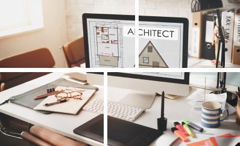

layanan
Desain Arsitektur
Layanan Desain Arsitektur kami mencakup seluruh proses perencanaan visual dan teknis untuk proyek bangunan baru, renovasi, atau perencanaan ulang, dengan fokus khusus pada pembuatan maket sebagai representasi fisik dari desain yang diusulkan.